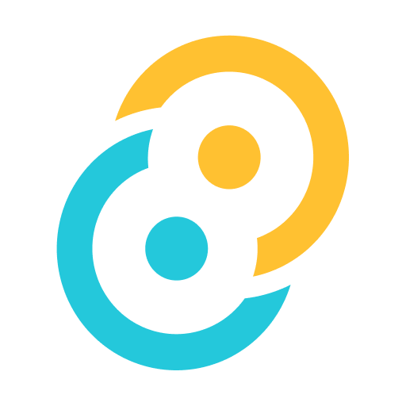

剪贴板不再只记得上一次。复制即归档，搜得到、能编辑、可置顶；顺手把截图标注、本地 OCR、格式变换、贴图对照也一并包了。

以下演示按真实界面尺寸制作（主窗口 480×700）。滚到哪个就自动播哪个，一次只动一个；点步骤可单步回看，点 ⏸ 后就不再自动接管。
截图 → 选区自动吸附窗口与控件 → 矩形/箭头/马赛克/序号等全套标注 → 本地 OCR 识别 → 双击直接复制。对标微信/QQ/Snipaste 的完整工作流，一个入口全搞定。
文本、链接、图片、文件、代码……复制的每一条都被自动归档。搜索、筛选、收藏、置顶、分组，几千条历史也能秒速找回。
不用切窗口：在任意应用里按 Alt+V 唤起历史面板，方向键选择、回车即粘贴——「复制即执行」的双击粘贴之外，批量挑着贴也只需键盘。
图片卡片一键「识别文字」：PP-OCRv6 引擎在本地离线识别，点击识别结果的任一行即可复制。文字识别、表格识别、二维码识别一应俱全——图片不出你的电脑。
选中任意文本一键变换：格式化 JSON、生成 SQL IN / INSERT 语句、正则批量替换、编码转换、内容提取、配置对比——高频开发操作不用再开在线工具。
截图或任意剪贴内容一键贴回屏幕，多张贴图并存、随时对照；T 键循环透明度、双击重编辑、右键复制 / 关闭 / 全部关闭，写代码、做设计时的随身参考板。
双击任意条目，自动按类型打开匹配的编辑器：Markdown 实时渲染、HTML 双栏预览、JSON 格式化校验、CSV 表格、代码高亮、富文本图文、流程图连线、图片编辑、密钥保护……内容多还能一键切换全屏编辑。
右键任意卡片弹出上下文菜单，主操作按内容类型变化并置顶高亮：JSON 卡是「变换为…」、链接卡是「在浏览器中打开」、文件卡是「在资源管理器中显示」；次级操作收进「更多操作」子菜单，删除带危险色提示。
下面是其余能力的完整速览——剪贴板进阶、编辑器生态、智能、管理与集成，逐项展开见下方手册。
文本 / 链接 / 邮箱电话 / 颜色 / 数字 / 代码 / JSON / 图文混排 / 文件 / 密钥脱敏 / 流程图，各配独立图标
搜 th 命中「腾讯」；关键词高亮，搜索历史记忆
Ctrl+点击 多选、Shift 范围选；全选 / 合并 / 导出 / 对比 / 删除
按时间 / 类型 / 来源组合筛选，预览后删，自动跳过置顶，Ctrl+Z 撤销
设置可开 7 / 15 / 30 / 60 天自动清除，历史库永不过载
格式条 + 实时渲染，改完即粘贴
代码 + 预览左右对照，所见即所得
JSON 格式化校验；CSV 表格单元格直接编辑
可视化节点连线，画完即贴
语言自动检测，16 种语言语法着色
图文混排保留顺序；图片缩放裁剪
密钥 / 凭证类内容仅在编辑器内显示明文
内容多切独立窗口，Ctrl+S 保存有未保存提醒
摘要 / 解释 / 自定义动作；默认关闭，未开启零请求零费用，密钥自动拦截
Ctrl+Shift+K 自然语言直达功能
复制 → 变换 → AI → 粘贴多步编排；条件步骤自动跳过、失败保留中间结果、粘贴后自动执行
自动汇总本周复制生成周报（可 AI 生成文字），第 1000 条复制里程碑回忆卡
能力雷达、主导角色画像、学习日志可见可删；画像可导出 Markdown / JSON / SKILL 技能包
高频话术、代码模板分类沉淀；支持 {{var}} 变量模板、最近使用、批量管理、JSON 导出备份
编码转换、内容提取、批量替换、配置对比、正则规则库；小工具含 JSON / Base64 / 时间戳 / 哈希 / UUID
剪贴板走局域网点对点同步（AES-256-GCM 加密 + 重放防护，同网段自动发现）；知识库用 6 位配对码设备直连
托盘弹窗看统计与最近记录，一键显示 / 暂停 / 设置 / 退出，贴图统一管理
右键任意内容一键生成二维码，尺寸 / 容错可调，扫码即取
收藏分组、置顶常备、自动去重防冗余，重启不丢
经典白 / 深海 / 午夜 OLED / 森林 / 美乐蒂 / 晨曦；热键自定义、开机自启、数据导出备份
几千条历史秒搜，标签 / 类型 / 分组多维筛选，关键词高亮
剪贴板就是入口：看到的内容随手存成笔记，之后能全文搜到，也能直接问它。笔记全存在你自己电脑里，搜索不出网。
任意一条剪贴板记录，右键就能存成笔记。之后全文搜索直接命中到某一段；提问会给带 [1][2] 出处的回答，点角标就跳回原文。笔记互相引用会自动串起来，还能一键查出哪些是没人引用的；两台电脑用 6 位配对码直连同步。
让 AI 直接读你的笔记：18 个 MCP 工具一键开放给 Claude Code 等 AI 客户端，它能自己检索、引用、写入你的库，不用你再手动复制粘贴喂给它。
回答里每句都标 [1][2] 出处，点开直达原文，方便你自己核对。检索在你本机完成；只有作答会走你自己在设置里开启的 AI。
笔记互相引用会自动串成关系；库体检能查出「没人引用、也引用不到别人」的笔记和失效的链接，库越大越不慌。
两台电脑在同一网络下用 6 位配对码直连，不经任何服务器，笔记内容不出你的机器。
填表单、录数据、搬配置——不用在两个窗口之间来回切了。 开栈后连续 Ctrl+C 把该复制的全收进来，再一路贴出去。
栈没开也行：从 Excel 复制一列，直接按 Ctrl+Alt+P， 认出是表格就自动开栈、按行拆开、先贴第一条。
开关打开后，每贴成一条自动补发一下 Tab —— 一个热键按到底， 三格表单不用碰鼠标。
Ctrl+Alt+Q 按顺序逐条贴； Ctrl+Alt+1~9 直接贴历史里的第 N 条。
内容里认出密钥 / 手机号 / 身份证 / IP，粘贴前弹确认， 可选「脱敏后粘贴」。规则在本机跑，内容不上传。
一个常驻托盘的助手，解决的是每天高频重复的「复制 — 粘贴 — 找东西」。
代码片段、报错信息、API 文档随手归档；截图标注 + 本地 OCR 让调试记录不再重敲；变换工具一键处理 JSON / 正则。
多图对比贴图、色值拾取、标注批注、长截图保存灵感；文字识别直接把图片里的文案变成可编辑文本。
客户反馈、需求文档、素材链接集中归档；片段库沉淀高频话术与模板；周报自动汇总本周剪贴内容。
复制即记录，再也不会"刚复制的东西找不到了"；双击即贴、Alt+V 快速粘贴，习惯后基本离不开鼠标键盘双飞。
资料即摘即存、全文可搜；问答带引用出处，写东西时不再怕「那句出自哪份材料」；截图 OCR 把纸面资料直接变文本。
课件截图一键 OCR、网课要点随手剪藏；错题与知识点沉淀成自己的库，复习时按标签抽回，两台电脑自动同步。
19 个功能分区的逐条图文详解：快捷键、变换规则、贴图、同步、AI 等全部能力。手册页顶部有按任务查的索引，不用先猜功能名。